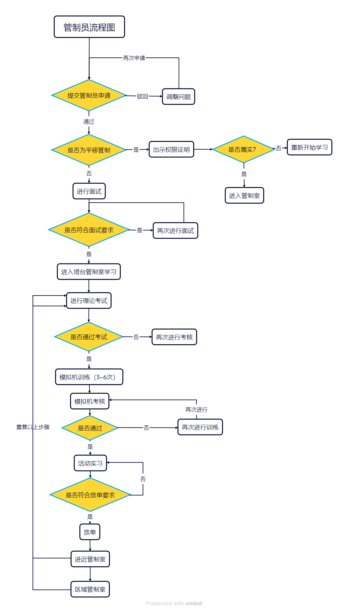
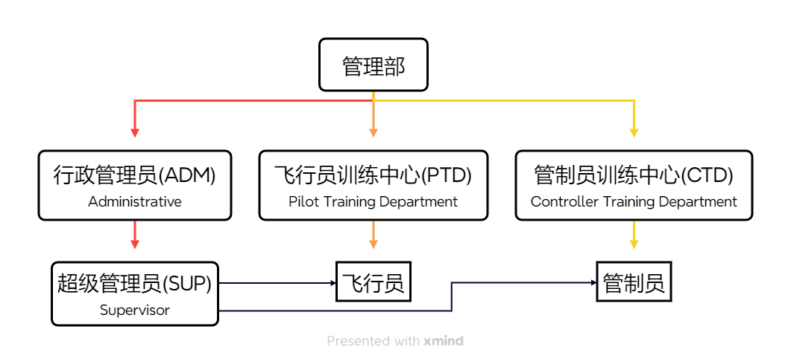

发行日期：2025年7月23日
文件编号：SKYLITE-CTD-202501-R2-SC
欢迎来到Skylite·简翼模拟飞行平台！
简翼模拟飞行平台致力于为广大飞行爱好者，特别是模拟飞行新手，提供一个真实、规范且易于上手的联飞环境本平台由星核科技（桂林）有限公司主导运营。
本手册是您成为平台管制员的清晰指南与核心依据。
无论您是刚开始接触管制的新手学员，还是希望提升技能的进阶成员，本条例都为您指明了从观察员起步，到晋升塔台、进近、区域管制员乃至教员的完整路径。
明确目标：了解每一级晋升需要掌握的知识（航图、气象、对话规范）和技能（情景意识、操作软件）。
知道学什么：您的教员在下一节课将讲解什么内容？本条例中对应的章节都有明确要求。
理解流程：熟悉语音面试、Sweatbox 考核、活动监管等关键步骤的标准。
遵循指引、熟悉流程、尊重规则，是您顺利通过考核、安全高效服务的基础。 我们期待在虚拟蓝天之上，见证您的成长！
| 版本 | 时间 | 编者 | 描述 |
|---|---|---|---|
| 0.1 | 2025.05.22 | 2352 | 初版 |
| 1.0 | 2025.07.09 | 2352、5516 | 重构、增加内容 |
1.1 每位管制员应将本手册的总则部分视为记忆内容，成为管制前务必查看。
1.2 本条例适用于平台内所有管制员，旨在提升管制员专业素养与应急处理能力。
1.3 本手册自发布起即刻生效，所有考核与晋升内容以此文件为依据，前序相关文件一律废止。
1.4 本规则会根据平台情况适时调整，请关注最新培训要求。
1.5 本规则最终解释权归Skylite平台行政管理组所有，任何疑问请及时反馈。
1.6 有任意两名教员或一名教员与教师在场的情况下，可不进行录音，保护学员隐私。
2.1 尊重每一个人：如果该管制员在训练过程中有对教员、飞行员或任何平台成员有不尊重或不文明的行为，就可能根据其严重程度，终止本次训练、甚至取消训练资格。
2.2 适用基本常识：阅读和使用本手册里各种规则时，请记住，在本手册中，基本常识永远适用。
2.3 准时参与：请教员/学员准时参与互相约定的时间，若临时有事，需提前告知。
2.4 提前作出准备：不要在面试、考核等活动开始后才翻阅理论资料。
2.5 先观摩和学习：新人管制员，在初次来到此区域前，必须进行观摩或学习该区域的规定等。
2.6 正确的呼号连接：当观察员的形式连接服务器时，必须以“呼号_OBS”的形式进行连接，例如：5516_OBS。Skylite的职员在表明身份后，可以其他名称连接，例如：SKYLITECTD、5516_SUP、SKYLITE1A等。
2.7 管制员不得多开：任何管制员上线的管制席位仅在同一时间段使用1个连接，例如：同时以管制员的1个连接和同时以机组的1个连接，这是不允许的。但同时以OBS的1个连接和时以机组的1个连接，这是合规的。
2.8 管制员不得挂机：任何管制员不得在管制过程中进行挂机。（请不要钻本规则的漏洞，参考2.2）
2.7 正确的席位名称：管制员仅允许以“呼号_席位代号”的形式连接，且仅允许连接以下席位：
DEL - 放行
RMP – 机坪（可用“A_GND”替代）
GND - 地面
TWR - 塔台
DEP - 离场
APP - 进近
CTR - 区域
FSS - 飞行服务站
2.8 遵循视程距离规定：
| 席位 | 距离 |
|---|---|
| OBS | ≤ 300 nm |
| DEL/GND | ≤ 20 nm |
| TWR | ≤ 50 nm |
| APP/DEP | ≤ 150 nm |
| CTR | ≤ 600 nm |
| FSS | ≤ 1500 nm |
2.9 先到先得：管制员连接时遵循“先到先得”原则，席位预定同理。由于不能上相同的席位。因此，若上一位管制在到达预定时间后还在“霸占席位”，不作出任何换班/交接等行为，则必须在5分钟内交接并断开连接。
2.10 遵守规定：客座管制员必须遵守Skylite平台的规则以及程序。
2.11 在其他平台接受训练的管制员，若以客座管制员（权限平移）方式加入平台，则后续管制员培训不由本平台进行。
2.12 仅允许以下平台的管制员通过客座管制员的身份加入本平台
Vatprc（其他Vatsim分部的管制，视情况平移）
Xflysim
Chinaflier
Sino
3.1 Sweatbox 考核：
3.1.1 Sweatbox 文本符合本手册要求的架次。
3.1.2 Sweatbox 考核在Teamspeak 语音频道进行。
3.1.3 学员在有条件的情况下，需录制Playback 文件。（最好录制视频，用于了解学员的操作）
3.2 主带教员对考核结果有最大和最终裁决权限。
3.3 如学员由于学习能力等其他原因，Sweatbox 训练超过8次且主带教员主观认为不适合继续进行下去的，可由主带教员提出，教员团投票，一致通过的可作劝退处理。
3.3 教员必须有相应资格，必须满足以下要求：
a. 14 周岁及以上
b. 由管制员训练中心批准
c. 拥有该管制室对应的执照
3.4 教员对非结果性决策拥有最终决定权：例如：在ZSPD机场和ZSSS机场之间的Sweatbox文本，只要满足本手册3.1.1 的要求，可以任意决定。
Sweatbox - 箱子、模拟机。用于对管制员进行训练的手段，通常由操控端和训练端组成。
向下兼容(Topdown) - 一种管制的运行模式。平台提倡在尽可能的情况下其用该模式以覆盖多机场的管制。
学员(Under Mentoring) - 正在学习管制的人员。
教员(Instructor) - 教授学员的人员且可以负责考核的人员。
教师(Mentor) - 教授学员的人员但不可以负责考核的人员。
| 权限中文名 | 英语全称 | 缩写 | 管制范围 | 备注 |
|---|---|---|---|---|
| 观察员 | Observer | OBS | 仅能进行观察 | |
| 塔台管制员 （见习） | Student 1 Under Mentoring | S1 UM、S1 见习 | GND/DEL Ground/Delivery （地面/放行） | |
| 塔台管制员 （正式） | Student 1 | S1 | GND/DEL Ground/Delivery （地面/放行） | |
| 塔台管制员 （资深） | Student 2 | S2 | TWR Tower （塔台） | |
| 非雷达管制员 | Tier 2 | T2 | Procedural Tower （塔台） | |
| 进近管制员 （见习） | Student 3 Under Mentoring | S3 UM、S3 见习 | TMA Termina Control Area （终端） | |
| 进近管制员 （正式） | Student 3 | S3 | TMA Termina Control Area （终端） | |
| 区域管制员 （见习） | Control 1 Under Mentoring | C1 UM、C1 见习 | ACC Area Control Centre （区域管制中心） | |
| 区域管制员 （正式） | Control 1 | C1 | ACC Area Control Centre （区域管制中心） | |
| 区域管制员 （弃用） | Control 2 （弃用） | C2 （弃用） | 弃用 | |
| 区域管制员 （资深） | Control 3 | ACC Area Control centre （区域管制中心） | ||
| 塔台教员 | Instructor 1 | I1 | ||
| 进近教员 | Instructor 2 | I2 | ||
| 区域教员 | Instructor 3 | I3 |


塔台管制是指挥机组从五边截盲降、跑道起飞的IFR 机组，到本场飞行的VFR机组。从放行、机坪、地面开始，一步步晋升到塔台。
拥有对管制工作的热爱
注册满48小时、连飞时长 > 4小时（Vatsim小时数 > 50小时）
机组的中英文陆空能力
了解管制员的规章制度
简单的Metar报文解读能力
eAIP航图识读能力
了解RVSM高度层
了解飞行情报区及空域的运行规范
管制晋升流程
SOP、Loa 的概念和内容
TL、TA、TH 和高度表拨正程序
航空器设备码和分类标准
席位之间的配合
中英陆空对话
航空器优先级
平行跑道运行模式
塔台Sweatbox 训练次数为3~8 次。
EuroScope 的基本使用办法
跑道的开启方式
各席位的协调办法
飞行计划的检查
标牌的及时标记
注意力的合理分配
流量控制的办法
陆空对话高效、科学
放行效率不低于15 架/小时（7.5 架/半小时）
机组计划及时检查出错误
滑行机组不出现对头、危险接近等情况
良好的职业操守
有一定抗压能力
通过理论考核
参与至少3 场Sweatbox 训练
通过Sweatbox 训练
注：Student 1 Under Mentoring 权限不需要在线训练。
同时担任塔台、地面、机坪、放行席位
上级进近必须在线
连续在线时长不得低于半小时
无违反“S1 Under Mentoring Sweatbox 考核标准”的行为（机组数量问题引起的效率问题除外）
经教员投票合格
获得“Student 1 Under Mentoring 塔台管制员（见习）”管制权限
通过S1 在线训练考核
注：Student 1 权限不需要Sweatbox 考核。
获得“Student 1 塔台管制员（正式）”管制权限
上管时长达到2 小时
获得“Student 2 塔台管制员（资深）”管制权限
一次雷达和二次雷达
QNH 和QFE
潜在冲突解决能力的培养
等待程序和堆叠程序
传统程序的运行方式（如：VOR、DME 等）
进近方式的差异和选择
阶梯下高
非雷达管制的程序标准
训练方式采用雷达监管下的程序管制，应 2 < 训练次数 < 5
标牌的标记方法
应急情况的处理
排序间隔的处理
时间汇报的时机及下一步动作
通过理论考核
通过Sweatbox 考核
注：Tier2 权限不需要在线训练。
进近管制员管理着机场和航路区飞机的进进出出，依靠无线电话和雷达管理航空器。管制范围上接航路区，下接机场管制区。
获得“Student 2 塔台管制员（资深）”管制权限
MSA和MVA的概念
进近标牌的使用
雷达识别的使用
应答机识别的使用
NOTAM的查阅
截获航向道的注意事项
PMS的概念
目视间隔的概念
航空器在空中的性能差别
训练方式采用循序渐进的模式，由小流量逐步增加至大流量，应不少于3 次。
移交的时机处理
间隔的调配
雷达引导的试用和时机
盘旋等待的使用时机
阶梯下高的实际运用
良好的宏观意识
航空器高度规避和速度调配
Sweatbox文本应含有进离场航空器，10~12架次
充分利用雷达引导
满足最低水平及垂直间隔要求
充分利用机场周围的空域
不引导航空器进入危险区等空域
不出现机组飞行在过渡夹层（空间）中
不出现耗时间的方式使机组降落
不出现对头、危险接近等情况
良好的职业操守
有一定抗压能力
通过理论考核
参与至少3场Sweatbox训练
通过Sweatbox训练
注：Student 3 Under Mentoring权限不需要在线训练。
担任雷达空域机场的进近席位
上级区域、下级塔台必须在线
连续在线时长不得低于半小时
无违反“S3 Under Mentoring Sweatbox考核标准”的行为（机组数量问题引起的效率问题除外）
经教员投票合格
获得“Student 3 Under Mentoring 进近管制员（见习）”管制权限
通过S3在线训练考核
注：Student 3权限不需要Sweatbox考核。
获得“Tier 2 非雷达管制员”管制权限
获得“Student 3 进近管制员（正式）”管制权限
MEA、MORA的概念
常见机型的速度范围
空速和马赫数的合理使用时机
向其他席位移交的时机
偏置等避免冲突方案
LID的分发时机和协调方案
无计划飞机的处置
区域Sweatbox训练次数为1~5次。
移交的时机处理
间隔的调配
雷达引导的试用和时机
盘旋等待的使用时机
阶梯下高的实际运用
良好的宏观意识
航空器高度规避和速度调配
Sweatbox文本应含有对向含有潜在冲突的航空器，10~12架次
及时进行雷达引导或偏置解决潜在危险
满足最低水平及垂直间隔要求
充分利用周围的空域
不引导航空器进入危险区等空域
不出现对头、危险接近等情况
良好的职业操守
有一定抗压能力
通过理论考核
参与至少1场Sweatbox训练
通过Sweatbox考核
注：Control 1 Under Mentoring权限不需要在线训练。
担任区域，且Topdown至少一个机场
下级其他任意机场的进近必须在线
连续在线时长不得低于半小时
无违反“Control 1 Under Mentoring Sweatbox考核标准”的行为（机组数量问题引起的效率问题除外）
经教员投票合格
获得“Control 1 Under Mentoring 塔台管制员（见习）”管制权限
通过C1在线训练考核
注：Control 1权限不需要Sweatbox考核。
获得“Control 1塔台管制员（正式）”管制权限
上管时长达到5小时
未完待续
[1] Globa- Controller Administration Policy (GCAP)
[2] Vatsim特殊席位表
[3] 进近管制员百度百科
[4] VATPRC管制员课程